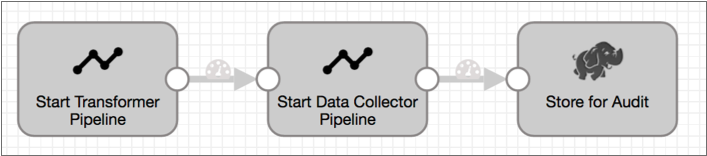
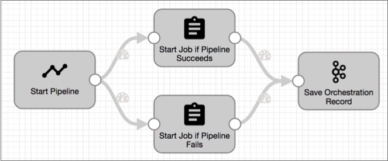
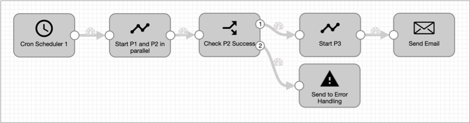

Orchestration Pipelines
Orchestration Pipeline Overview
An orchestration pipeline is a Data Collector pipeline that uses one or more orchestration stages to schedule and perform tasks, such as starting a sequence of Data Collector pipelines and Control Hub jobs. Use orchestration pipelines to perform tasks in an orchestrated workflow across the StreamSets platform.
For example, you can create an orchestration pipeline that starts several Data Collector, Data Collector Edge, and Transformer pipelines at 1 am every day. If you use Control Hub, you can similarly create an orchestration pipeline that starts Transformer jobs, then triggers Data Collector jobs only if the Transformer jobs successfully complete.
A typical orchestration pipeline generates a single record. As each orchestration stage completes its task, it adds information about the task that it performed to the orchestration record. For example, the Start Pipelines origin lists the pipeline ID and status of each pipeline that it starts. When the orchestration pipeline completes, the resulting orchestration record provides details about all of the tasks performed by the pipeline.
You can use other Data Collector stages in an orchestration pipeline to create the workflow that you need. For example, you might add a Stream Selector processor that routes the record to different branches based on whether a Control Hub job succeeded or failed. Or, you might use an Email executor to send an email after the workflow is complete.
An orchestration pipeline can be configured in any logical way. Review the documentation for the orchestration stages to see how you might orchestrate your workflows.
Orchestration Stages
Unlike typical Data Collector origins, processors, and destinations, orchestration stages do not process batches of data. Instead, when triggered, they perform orchestration tasks such as start pipelines or wait for Control Hub jobs to complete.
Origin orchestration stages perform their tasks when the pipeline starts. They also generate an orchestration record that passes downstream. Processors and destination stages perform their tasks when they receive an orchestration record.
- Cron Scheduler origin - Generates a record at scheduled intervals. Use to schedule orchestration tasks.
- Start Jobs origin - Starts one or more jobs in parallel when the orchestration pipeline starts.
- Start Pipelines origin - Starts one or more pipelines in parallel when the orchestration pipeline starts.
- Control Hub API processor - Sends a request to a Control Hub REST API upon receiving a record and writes the response to a specified output field.
- Start Jobs processor - Starts one or more Control Hub jobs or job instances from a job template in parallel upon receiving a record.
- Start Pipelines processor - Starts one or more pipelines in parallel upon receiving a record.
- Wait for Jobs processor - Waits for Control Hub jobs to complete.
- Wait for Pipelines processor - Waits for pipelines running on the specified execution engine to complete.
Orchestration Record
An orchestration origin generates an orchestration record that contains details about the task that it performed, such as the IDs of the jobs or pipelines that it started and the status of those jobs or pipelines.
As this record passes through the pipeline, each orchestration stage updates the record, adding details about the task that it performed. When the orchestration pipeline completes, the resulting orchestration record provides information about all of the orchestration tasks that the pipeline performed.
For details about how each orchestration stage creates or updates an orchestration record, see "Generated Record" in the stage documentation.
Example
Say you have the following orchestration pipeline with a Start Pipelines origin that starts a Transformer pipeline, a Start Pipelines processor that starts a Data Collector pipeline, and a Hadoop FS destination to store the resulting orchestration record. Both Start Pipelines stages run the pipelines in the foreground, so they wait until their pipelines complete before passing the orchestration record downstream:

This orchestration pipeline generates the following orchestration record:
{
"orchestratorTasks": {
"Start_Transformer_Pipeline": {
"pipelineIds": [
"LoadADLS82ea742b-4091-493c-9baf-07341d45564c"
],
"pipelineResults": {
"LoadTable82ea742b-4091-493c-9baf-07341d45564c": {
"pipelineId": "LoadADLS82ea742b-4091-493c-9baf-07341d45564c",
"pipelineTitle": "Load ADLS",
"startedSuccessfully": true,
"finishedSuccessfully": true,
"pipelineMetrics": {
"pipeline": {
"outputRecords": 100000500,
"inputRecords": 100000500
},
"stages": {
"<origin1>": {
"outputRecords": 100000500
},
"<processor1>": {
"outputRecords": 100000500,
"inputRecords": 0
},
"<processor2>": {
"outputRecords": 100000500,
"inputRecords": 100000500
},
"<destination>": {
"outputRecords": 100000500,
"inputRecords": 100000500
}
}
},
"pipelineStatus": "FINISHED",
"pipelineStatusMessage": null,
"committedOffsetsStr": "{<offset info>}"
}
},
"success": true
},
"Start_Data_Collector_Pipeline": {
"pipelineIds": [
"SalesProc2a4aa879-ebe2-44f3-be67-f3e95588be6e"
],
"pipelineResults": {
"SalesProc2a4aa879-ebe2-44f3-be67-f3e95588be6e": {
"pipelineId": "SalesProc2a4aa879-ebe2-44f3-be67-f3e95588be6e",
"pipelineTitle": "Sales Processing",
"startedSuccessfully": true,
"finishedSuccessfully": true,
"pipelineMetrics": {
"pipeline": {
"outputRecords": 121130,
"errorMessages": 0,
"inputRecords": 121130,
"errorRecords": 0
},
"stages": {
"<origin>": {
"outputRecords": 121130
},
"<processor>": {
"outputRecords": 121130,
"errorMessages": 0,
"inputRecords": 121130,
"errorRecords": 0
},
"<destination>": {
"outputRecords": 121130,
"errorMessages": 0,
"inputRecords": 121130,
"errorRecords": 0
}
}
},
"pipelineStatus": "FINISHED",
"pipelineStatusMessage": null,
"committedOffsetsStr": "{<offset info>}"
}
},
"success": true
}
}
}- The Start_Transformer_Pipeline task performed by the Start Pipelines origin starts the
Load ADLSTransformer pipeline.From the
startedSuccessfullyandfinishedSuccessfullyfields. you can see that the pipeline started and completed successfully before the record was passed downstream.You can also see the pipeline and stage metrics provided by the origin.
- The Start_Data_Collector_Pipeline task performed by the Start Pipelines processor starts
the
Sales ProcessingData Collector pipeline.This pipeline also started and completed successfully, and the pipeline metrics are included in the orchestration record.
Using the Orchestration Record
As with most Data Collector records, you can use information in an orchestration record to perform pipeline processing,
For example, say you want to start different Control Hub jobs depending on whether several Data Collector pipelines complete successfully. The orchestration pipeline might look like this:

success field indicates that the
origin has completed all of its configured tasks. To start a job after all pipelines
started by the origin successfully complete, you might set the following precondition
for the Start Job if Pipeline Succeeds
processor:${record:value('/orchestratorTasks/startJobs/success') == true}In the field path, startJobs is the task name defined in the origin.
${record:value('/orchestratorTasks/startJobs/pipelineResults/<pipelineID>/finishedSuccessfully') == true}${record:value('/orchestratorTasks/startJobs/success') == false}If you wanted to start the job only if the first pipeline started by the origin has more than 100 error records, you could use the following precondition:
${record:value('/orchestratorTasks/startJobs/pipelineResults[0]/pipelineMetrics/pipeline/errorRecords') > 100}For details about the fields that each orchestration stage creates or updates, see "Generated Record" in the stage documentation.
Sample Pipeline
You can develop orchestration pipelines that perform a variety of tasks in an orchestrated workflow, such as scheduling pipelines and jobs and triggering subsequent tasks.
Recurring Task that Runs Multiple Dependent Pipelines
With the orchestration stages, you can design an orchestration pipeline that triggers a set of tasks daily and starts dependent pipelines based on the success of an earlier pipeline.
For example, an orchestration pipeline might run three separate but dependent pipelines, P1, P2, and P3. The orchestration pipeline runs two of the pipelines, P1 and P2, in parallel, and then starts the third pipeline only after both P1 and P2 finish, and P2 succeeds. The following image shows the orchestration pipeline:

The Cron Scheduler origin generates an orchestration record at the specified time each day. When the Start Pipelines processor receives the record, it starts the P1 and P2 pipelines in parallel, running them in the foreground. After both pipelines finish, the processor updates and passes the record to a Stream Selector processor, which checks for the success of P2.
If P2 succeeds, the Stream Selector processor routes the record to start P3. If P2 fails to complete, the Stream Selector processor routes the record to error handling. When the Start P3 Start Pipelines processor receives a record, it runs P3 in the background. So, after it starts the pipeline, the processor updates and passes the orchestration record immediately to the Email executor, which sends an email announcing the start of the P3 pipeline.
If you wanted to run the orchestration pipeline manually rather than on a schedule, you could replace the Cron Scheduler origin and the Start Pipelines processor with a Start Pipelines origin.